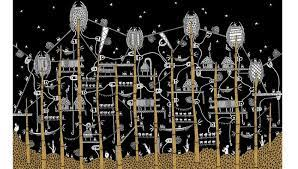
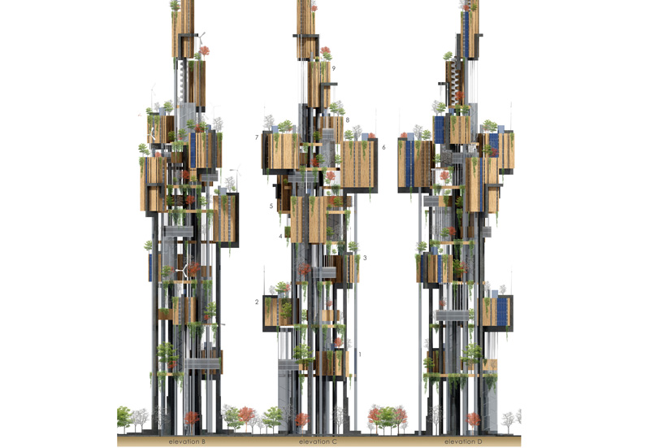
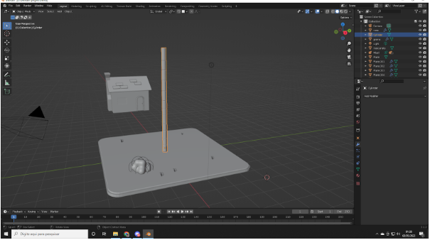
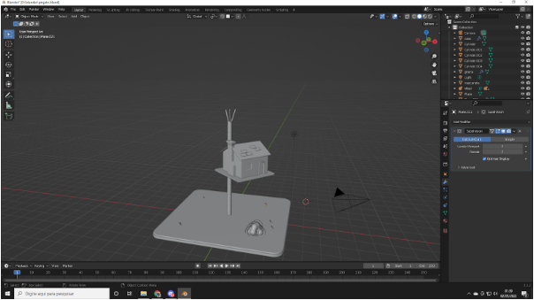
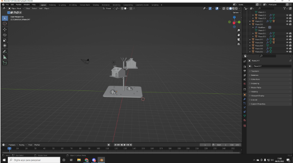
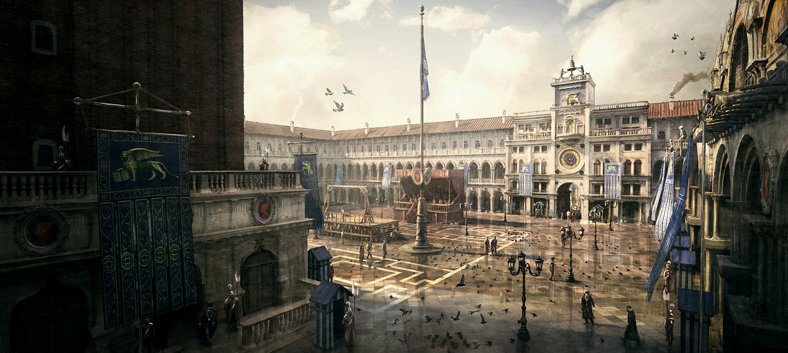

Projeto Final Estudo dirigido de Design
Obra escolhida: Ítalo Calvino - Cidades Invisíveis
Durante as aulas de estudo dirigido de design a obra de Ítalo Calvino foi a que mais me chamou atenção. Os relatos que o aventureiro Marco Polo conta ao descrever as cidade pela qual viaja e suas respectivas arquiteturas, atiçaram minha imaginação e me levaram a explorar mais as reflexões, experiências e conjeturas que o mesmo passa. A descrição das cidades me lembrou muito também da descrição ao ambientar um cenário de RPG de mesa (role playing game). Ambos trazem imersão e constroem o ambiente com as palavras. E devido a essa lembraça a leitura me marcou e tal forma que escolhi como tema do projeto final.
Zenobia
Dentre as várias cidades (55) do texto escolhi a cidade de Zenobia pois foi a que mais me chamou atenção. Ao imaginar a arquitetura imaginei algo bem oriental e moderno, característica que está presente em minha pessoa. Zenobia é classificada com uma cidade delgada. A palavra delgado diz respeito a algo esbelto, fino e delicado. Feita de casas de Zinco construidas sobre estacas de bambu, apesar da aparẽncia frágil a construção é bem resistênte e moderna. A cidade não é classificada como triste ou feliz, o livro diz que ela é o que ela deveria ser. Construida em cima de um rio seco, a cidade representa a ideia de torna sonhos em realidade. Construir um cidade com pouco rercurso hídrico não é fácil, mas com força de vontade e persistência qualquer coisa é possível. Todos esses traços fazem de Zenobia uma cidade única, com uma proposta inovadora livre dos concretos armados ou uma "floresta de pedra e metal".

Pesquisando mais sobre descobri um artista peruano que recriou as 55 cidades invisíveis de Italo Calvino. A artista Karina Puente fez sua própria interpretação das cidades entre elas está Zenobia apersentada abaixo.

"O projeto começou em 2014, quando a arquiteta se viu cansada de projetar residências privadas e iniciou um projeto urbanístico junto à prefeitura de Lima. Em casa, desenhava as partes da cidade que visitava durante o trabalho, entre casas, edifícios, favelas e lojas. O hábito trouxe à lembrança a obra de Calvino, que lera na faculdade – e que, ao reler, a fez 'explodir de criatividade'".
Projetos de Zenobia se tornam realidade
O designer Alessandro Tonni e Manuela Spera criaram um ponto de encontro entre a arquitetura e a literatura englobando e reinterpretando uma das imagens surreais mais sugestivas de Ítalo Calvino.

Modelagem 3D da arquitetura de Zenobia
Como parte do projeto criei minha própria interpretação da arquitetura de Zenobia feita com Blender. Ferramenta de modelagem 3D. Nessa sessão irei mostrar o processo de confecção e o produto final da obra.
Etapas do processo
-
Início

-
Meio

-
Final

-
Ajustes, Efeitos e Coloração

Projeto 3D
Sobre a ferramente Blender
O Blender é uma ferramenta que permite a criação de vastos conteúdos de 3D. Oferece funcionalidades completas para modelagem, renderização, animação. Muito utilizado no design de jogos o desenvolvedor pode construir cidades tão realisticas quanto da vida real.

Arquitetura dentro do jogo Assasin Creed.
Referências
-
https://revistacult.uol.com.br/home/peruana-quer-ilustrar-cidades-invisiveis-de-calvino/ , acessado em 04/05/2022.
-
https://www.evolo.us/reinterpreting-italo-calvinos-zenobia/, acessado em 04/05/2022.
-
https://www.trabalhosfeitos.com/ensaios/Zenobia-Italo-Calvino/43343595.html, acessado em 04/05/2022
Versionamento
| Versão | Data | Modificação | Autor |
|---|---|---|---|
| 1.0 | 04/05/2022 | Criação do projeto | Victor Yukio |
| 2.0 | 05/05/2022 | Adição de novos conteúdos | Victor Yukio |